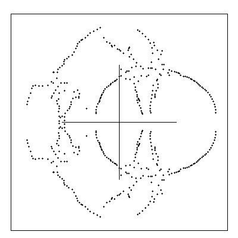

Our picture illustrates a (quite realistic) model of a physical system G in which each spin is a dipole, and it's state is given by its orientation relative to the lattice. Our picture is almost entirely quenched. That is to say, most spins are shown frozen in a particular orientation. But one spin in particular is illustrated visiting each of four different orientations.
When G holds heat energy (i.e. at finite temperatures) it may be thought of as wandering through S. The amount of time it spends, typically, in each state, depends on the microscopic details of that state, and on the amount of heat energy available. Determined by the microscopic interactions of the spins, there will be a certain energy requirement associate to each state. The higher this requirement, the less time the system is likely to spend in that state. To model the system mathematically we must capture this behavior.
Let H denote a map from S to the real numbers, called the HAMILTONIAN of the array. Let b be a variable proportional to the inverse temperature, then for each such H the partition function Z is defined as follows.
| _
\ |
||
| Z= | /_ | e-bH(s) |
| s in S | ||
| _
\ |
|||
| H(s)= | - | /_ | f(si,sj) |
| (i,j) |
Amongst physical systems like the one represented in our picture,
it is realistic in many cases to suppose
that the set of allowed orientations of a single spin is discrete (and hence
finite). Even if this is not the case, we may often
model the set of orientations with a discrete set, without
losing realistic features from the model. In either case
we may represent it by the set Q_={1,2,...,Q} (some Q);
whereupon S=hom(G,Q_).
In this case, if the lattice is finite,
and H maps to the rationals,
then the partition function is a polynomial in eb.
2. Polynomial Examples

For a concrete example of a model, let us take Q=4 and
f(x,y)=f(x-y)=f(-x+y) and
(f(0),f(1),f(2))=(3,1,0).
This picture then shows the zeros of Z, plotted in the complex
eb plane, for three different lattice
sizes - 6x13, 8x13, 10x13 (each periodic in the shorter direction and
open in the longer direction).
Press STOP on your browser to stop the animation at a particular lattice size.
It is worth noting that these are very small systems in physical terms (Avogadro's number is of order 1026). However the sum in Z is over 4130 terms, and the degree of the resultant polynomial, which must be factorized to obtain these pictures, is of order 103. Thus the computations involved are still staggeringly large! Also, as the animation shows, the large scale features of the distribution of zeros are already quite stable over this range of lattice sizes. The main change as the system gets bigger is that the `lines' of zeros appoaching the positive real axis end up closer to the axis. We will examine the consequences for physics of this feature of the model shortly.
In these pictures only the positive real axis has any direct relevance to
physics. The interval [0,1] is the `antiferromagnetic' region, in the
sense that the Hamiltonian encourages spins to be anti-aligned; and
the remainder of the axis is the ferromagnetic region.
By symmetry the picture for the f=(3,2,0) model is the
same
if plotted in e-b.
3. Interpretation of results
Let us know try to get a flavour of what these results may
tell us.
As our discussion of
observables
shows, Z appears in the denominator in the
modelling of physical quantities. As such, zeros of Z approaching the
physical axis signal dramatic variations in these quantities. These
dramatic variations are the closest a finite system can come to
representing phase transitions. Thus, roughly speaking,
the lines of zeros pinching the physical axis signal that the points
being pinched are candidates for phase transition points.
In our example we thus have clear evidence for a (single) phase transition in the ferromagnetic (3,1,0) model. This is in agreement with the standard heuristic picture for these models. Perhaps more interesting is the two-pronged structure in the neighbourhood of the ferromagnetic (3,2,0) model. Might this suggest three phases?
These Q=4 clock models (or Ashkin-Teller models) have been the subject of considerable study. The (2,1,0) model is well known to factorise as two copies of the Ising model (the unique Q=2 model), and as such it is known to have only two phases in the ferromagnetic region. This structure breaks, but only degenerately, when the coupling strengths are anisotropic (i.e., allowed to vary between the two natural lattice directions, so that the two Ising models disorder at two different temperatures). While it has been argued that isotropic Q>4 models exhibit three `topologically' distinct phases with a suitable choice of f, it has been thought, in some quarters, that all isotropic Q=4 models have only two phases - so our picture presents rather an intriguing new datum! It does not contradict this view, since the tips in the two-pronged structure get closer together as the lattice size increases (so they may yet converge in the limit). However it does suggest that the realisation of phase structure is more subtle in this region.
Exercise: Compute the partition function and zeros for the 12x13 lattice (and so on as necessary), and hence determine the phase structure of the (3,2,0) model.